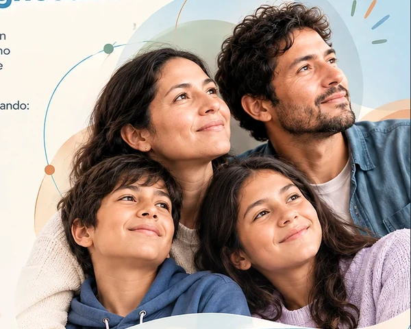
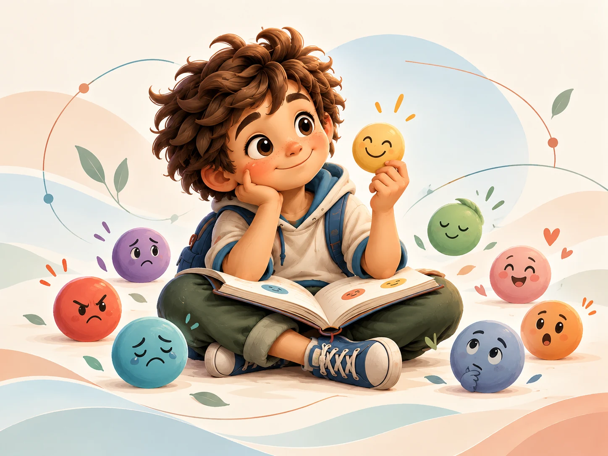
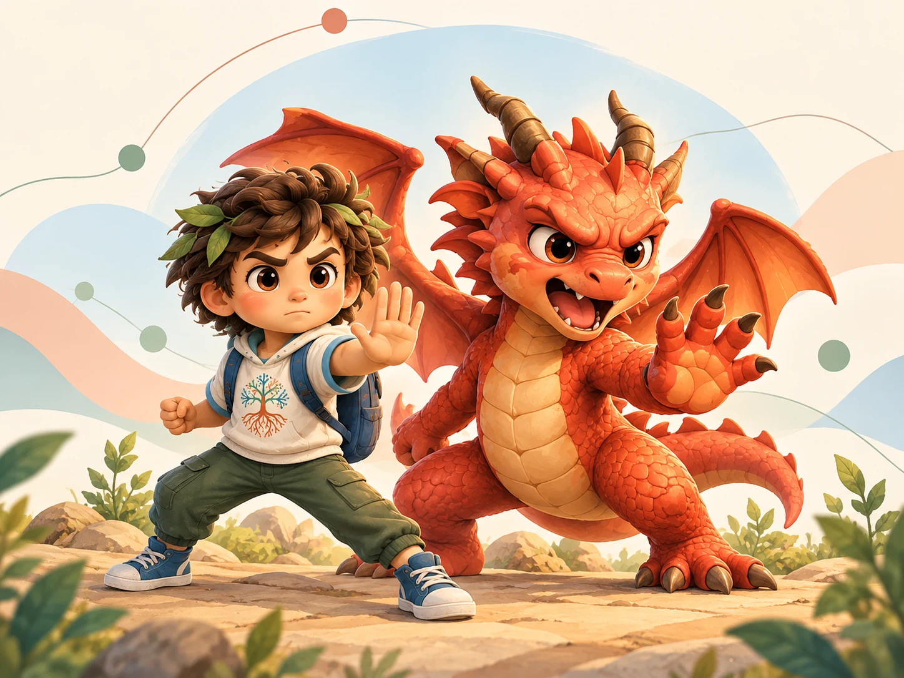
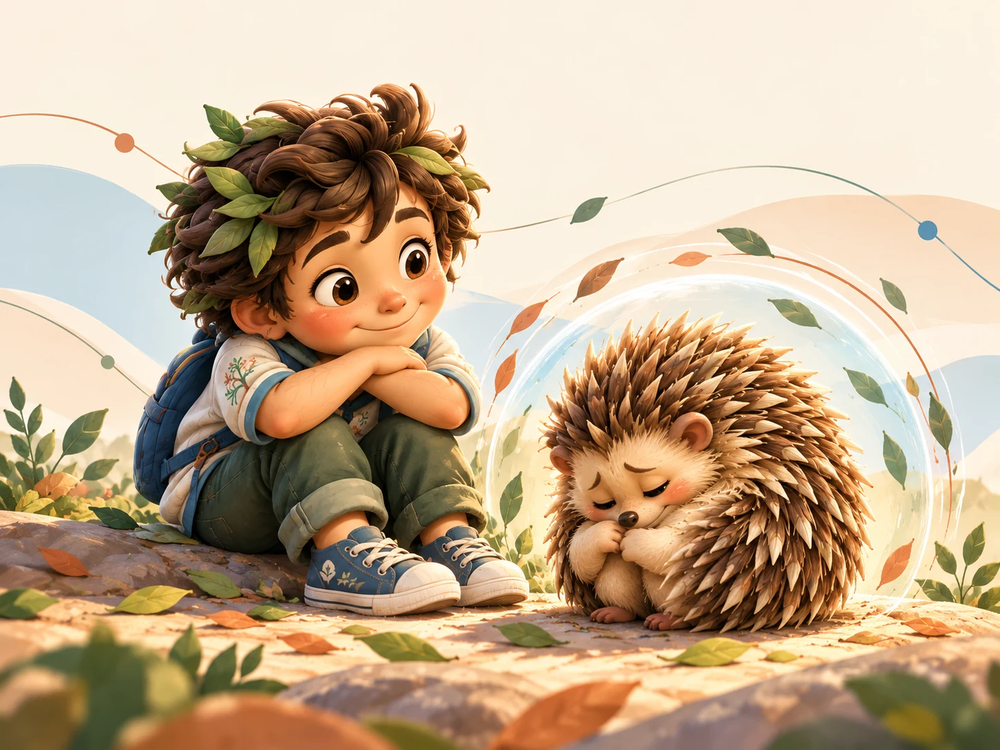
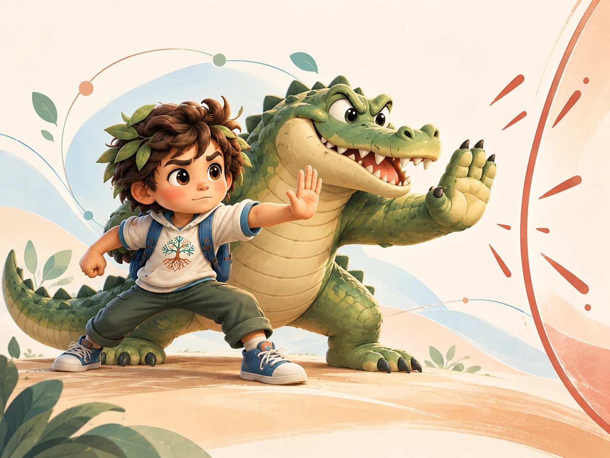
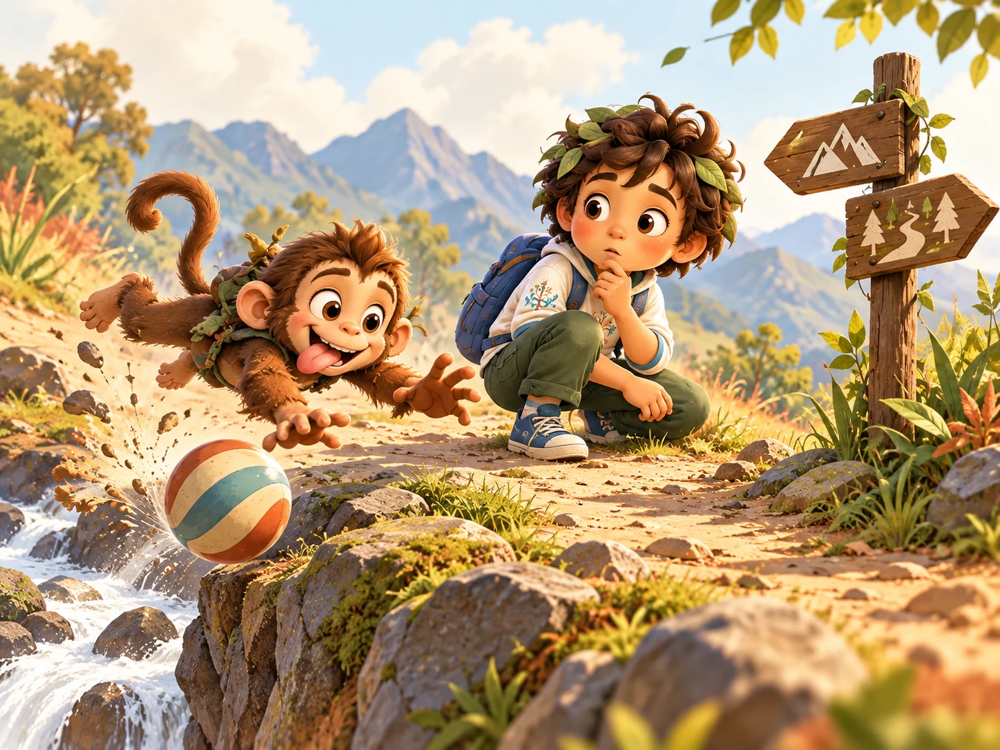
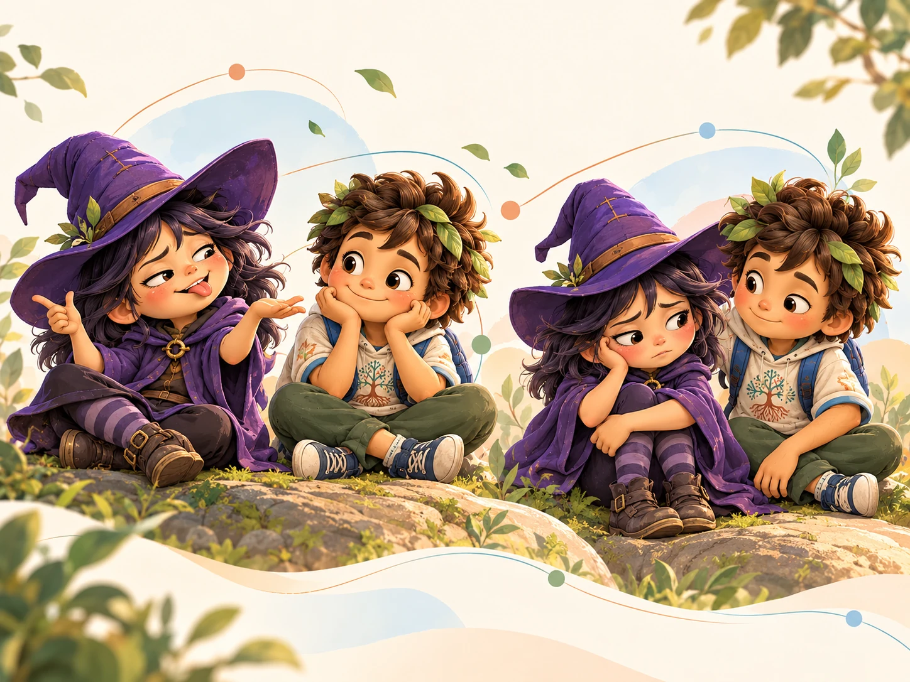
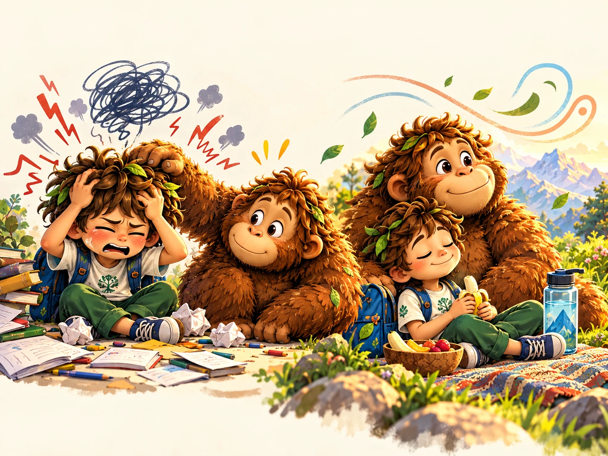
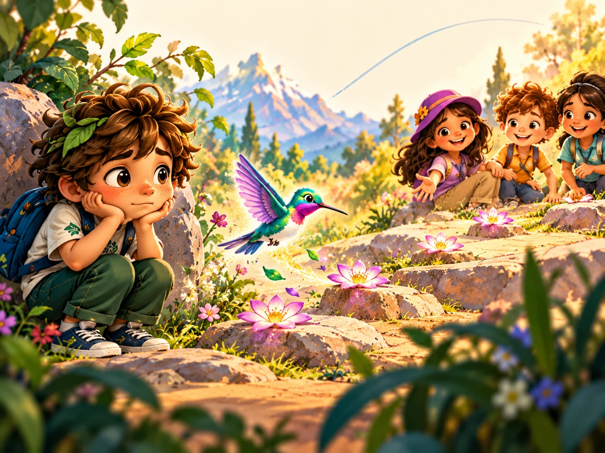
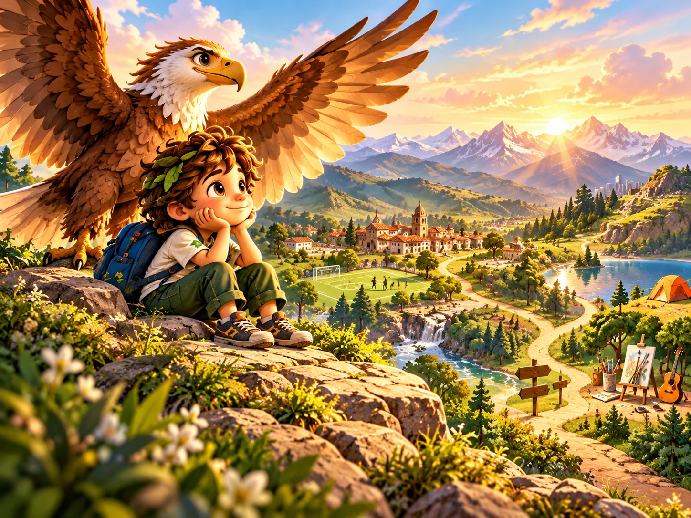

De la botánica a una pregunta humana
La pregunta no es solamente cómo lograr que una persona se adapte a un entorno difícil. También debemos preguntarnos qué condiciones podemos construir alrededor de ella para que pueda desarrollarse, participar y avanzar.
Las capas pueden representar historia, protección, adaptación y experiencia acumulada. Las raíces hablan de sostén. El bosque recuerda que nadie existe sin relaciones, oportunidades y apoyos.
Por qué el isotipo no es un árbol literal
El símbolo maestro integra raíces, tronco, ramificaciones, conexiones y nodos. Toma del queñual una inspiración conceptual, pero no intenta representar una especie concreta ni ofrecer una explicación científica completa.
Así puede hablar al mismo tiempo de persona, familia, aprendizaje, comunidad y posibilidades, sin reducir la identidad de Raíces a una ilustración botánica.
Queñal y sus compañeros
Queñal es un personaje narrativo propio de Raíces. No representa al árbol botánico ni un diagnóstico: representa a la persona, con su historia, sus posibilidades y un camino que todavía está construyendo.
El Dragón, el Cuerpoespín, el Cocodrilo Mordelón, el Monito Travieso, la Brujita, el Primitivo, el Colibrí y el Águila pueden acompañarlo cuando aparecen distintas experiencias y respuestas. Las criaturas acompañan a Queñal; no sustituyen a Queñal ni definen tipos de niñas o niños.

Personaje central · identidad
Queñal
Cuando cuesta: puede confundirse, desbordarse o no saber todavía cómo expresar lo que vive.
Lo que también aporta: observa, siente, aprende y descubre que ninguna emoción define toda su identidad. Los compañeros aparecen en su camino, pero nunca lo sustituyen.

Intensidad · límite
El Dragón
Cuando cuesta: ruge, calienta el cuerpo y puede hacer que la emoción salga con demasiada fuerza.
Lo que también aporta: presta energía para decir un “no” firme, pedir que algo se detenga y defender un límite cuando alguien lastima. La meta no es apagarlo, sino aprender a dirigir su fuerza sin dañar.

Protección · espacio
El Cuerpoespín
Cuando cuesta: se encierra, levanta púas o interpreta el acercamiento como una amenaza.
Lo que también aporta: avisa que hace falta distancia, tiempo o seguridad. Enseña a pedir espacio y a volver al vínculo cuando el cuerpo se siente preparado.

Reacción corporal · defensa
El Cocodrilo Mordelón
Cuando cuesta: el cuerpo puede pegar, empujar o morder antes de que aparezcan las palabras.
Lo que también aporta: recuerda que el cuerpo detecta peligro y necesita defenderse. Esa fuerza puede transformarse en levantar la mano, alejarse, pedir ayuda y protegerse sin herir a otra persona.

Impulso · exploración
El Monito Travieso
Cuando cuesta: se lanza hacia lo atractivo sin medir el riesgo o las consecuencias.
Lo que también aporta: trae juego, movimiento, curiosidad y ganas de descubrir. Con una pausa y apoyos claros, puede explorar sin perder la seguridad.

Armadura verbal · creatividad
La Brujita
Cuando cuesta: usa burla, ironía o sarcasmo para ocultar incomodidad y puede terminar hiriendo.
Lo que también aporta: ofrece humor, imaginación y una mirada diferente. Puede aprender a bajar la armadura y decir con honestidad lo que siente o necesita.

Necesidades básicas · pausa
El Primitivo
Cuando cuesta: con hambre, cansancio o sobrecarga, razonar y esperar se vuelve mucho más difícil.
Lo que también aporta: hace visibles las señales del cuerpo. Recuerda que antes de exigir una respuesta pueden hacer falta agua, alimento, descanso, tiempo y calma.

Miedo · ritmo propio
El Colibrí
Cuando cuesta: el miedo puede llevar a evitar, esconderse o no atreverse a acercarse.
Lo que también aporta: aporta sensibilidad y cautela. Enseña que acercarse poco a poco, con apoyos y al propio ritmo, también es avanzar.

Perspectiva · posibilidades
El Águila
Cuando cuesta: las comparaciones y expectativas pueden hacer sentir que solo existe una forma correcta de llegar.
Lo que también aporta: permite tomar distancia, reconocer intereses y mirar varias rutas. Invita a confiar en las propias capacidades sin exigir perfección.
Una regla para todas las historias: ningún compañero es bueno o malo y ninguno representa un diagnóstico. Cada uno muestra una experiencia que puede traer dificultades y, al mismo tiempo, contener una señal, una necesidad o una capacidad que merece comprenderse.
La descripción general del ecosistema se apoya en la definición oficial de bosque relicto altoandino del SINIA–MINAM y en la caracterización de un bosque de queñual en Áncash.